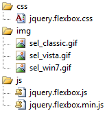

FlexBox
Take Me To FlexBox Demos!FlexBox is a jQuery plugin that is intended to be a very flexible replacement for html textboxes and dropdowns, optionally using ajax to retrieve and bind JSON data.
It can be used as a:
- ComboBox, with optional per-result html templates
- Suggest box, like Google's search
- Data-driven type-ahead input box
- Auto-completion using local (JSON) or remote (JSON via ajax) data
- Skinning via css
- Flexible paging of results
- Configurable client-side caching
- Much more... (see Configuration Options)
Download
Please visit the CodePlex Project Page to download FlexBox
Demonstration
Here is a teaser... (click the arrow, or type a character or two in the input box)
To see the power and flexibility of FlexBox, please check out all the demos!
Getting Started
Download the latest version of FlexBox, which includes the following files:
|  | Please note that by default, FlexBox expects to see files in this directory structure. If you need to move the "sel*.gif" image (which is a sprite for the arrow), be sure to update the css file to point to the new location. |
Add an empty div to the <body> tag wherever you want the FlexBox to appear:
Make sure you have a reference to jQuery, and the FlexBox js and css files in the <head> tag:
Also within the <head> tag, below the references to jQuery and FlexBox, call the jQuery ready() function, and within it, call the FlexBox using the id of the <div> you just created. The only parameter you must pass is the page name that will return the results as a JSON string. You may also pass a second parameter, which is a JSON object containing any of the Configuration Options:
The call to results.aspx is ajax, and should return a JSON string in the format shown below.
- The "id" property is a string or integer, and is the value submitted when the form is submitted (like the "value" attribute of the html <option> tag)
- The "name" property is a string or integer, and is the text displayed for each result, and when a result is selected (like the text between the html <option> open and </option> close tags)
- All of these names and values are configurable to match the format of your JSON data
This produces the following (when the default css styles are used):

Configuration Options
Here are all the available options for customizing the FlexBox:
| Appearance |
|
showArrow : boolean (default = true)
Set to false to simulate Google Suggest, which forces the user to type before results are displayed. |
|
showResults : boolean (default = true)
Set to false to hide the dropdown results. Exact matches appear immediately, and are selected in the input box. |
|
noResultsText : string (default = 'No matching results')
Text to display when there are no results matching what the user typed. Appears as a one-row dropdown below the input box. |
|
width : number (default = 200)
Specifies the overall width of the FlexBox. Automatically adjusts to accommodate the arrow as necessary. |
|
maxVisibleRows : number (default = 0)
When set to 0 (zero), this option is ignored. Otherwise, you can set this value to force scrolling. This can be used in conjunction with paging.pageSize. |
|
watermark : string (default = '')
Helpful text that appears in the input box when it is loaded. Automatically hides when the arrow is clicked, or the input box gets focus. Ignored if initialValue is set. This option can be styled by changing the class '.ffb-input.watermark'. |
|
resultTemplate : string (default = '{name}')
This very flexible property allows you to specify a template that is applied to each row of data returned. The template is a combination of html and JSON properties (in curly braces). For example, to create a two-column result template that displays the id in the first column, and the name in the second column, you might use this: For each object in the JSON results array, the resultTemplate is applied, and the actual value in the JSON data is substituted for the {property}. You can also use dot notation for nested JSON properties (e.g. {Thumbnail.Url}). |
| Behavior |
|
method : string (default = 'GET')
If 'GET', will call jQuery's $.getJSON() function. If 'POST', will call jQuery's $.post() method, with "post" as the fourth parameter. "POST" is useful for ASP.NET Web Services (Script methods). When POSTing to an ASP.NET page, remember to check Request.Form (or just Request) in the code-behind, instead of Request.QueryString. |
|
autoCompleteFirstMatch : boolean (default = false)
If set to true, the input box will automatically populate the first match for the text entered, and highlight the remaining characters. If set to false, the input box will always display only what the user types until a selection is made. |
|
selectFirstMatch : boolean (default = true)
If set to true, the first matching item in the list will appear selected. If set to false, no items will be selected when a match is made. |
|
allowInput : boolean (default = true)
If set to false, behaves more like a standard <select> element, disallowing user input. If set to true (the default), acts like a combobox. |
|
queryDelay : number (default = 100)
The number of milliseconds to wait before the query is executed (after the user clicks or types in the FlexBox). |
|
minChars : number (default = 1)
The minimum number of characters the user must enter before a search is executed. Note that if showArrow = true, and arrowQuery = '', the user can click the arrow to view results (without typing any characters). Zero (0) is an invalid option for this property. |
|
highlightMatches : boolean (default = true)
Specifies whether the text the user types should be highlighted within the results. Use the matchClass option to set the css class for highlighted characters. |
|
highlightMatchesRegExModifier : string (default = 'i')
Specifies the type of RegEx modifier to apply when determining how to highlight matches. Options are:
|
|
arrowQuery : string (default = '')
The query to pass to the server when the arrow is clicked. By default, clicking the arrow will return all results (up to paging.pageSize, which is 10 by default). If you wanted to limit the results returned to those that start with the letter 'a', you can set arrowQuery to 'a', |
|
onSelect : object (default = false)
The function to run when a result is selected. Use the full power of jQuery to write values to divs, or even make another JSON call! Within this function, if you want to get the text displayed in the input box, use this.value, and if you want to get the hidden value (see the hiddenValue configuration options), use this.getAttribute('hiddenValue'). |
|
maxCacheBytes : number (default = 32768)
The amount of data you will allow to be cached on the client side. Setting this value to 0 (zero) disables the cache. maxCacheBytes uses a JavaScript associative array to quickly access data based on query and current page, and uses an array to maintain a list of most recently used items (MRU). |
| CSS Class Overrides |
|
containerClass : string (default = 'ffb')
Overrides the name of the class for the main FlexBox div. |
|
contentClass : string (default = 'content')
Overrides the name of the class for the content div. |
|
inputClass : string (default = 'ffb-input')
Overrides the name of the class for the input element. |
|
arrowClass : string (default = 'ffb-arrow')
Overrides the name of the class for the arrow image. |
|
selectClass : string (default = 'ffb-sel')
Overrides the name of the class for "selected" items (rows). |
|
matchClass : string (default = 'ffb-match')
Overrides the name of the class for showing where your query matches the result. |
|
noResultsClass : string (default = 'ffb-no-results')
Specifies the class to apply to the noResultsText configuration options. |
| Form Field Values |
|
displayValue : string (default = 'name')
JSON property whose value is displayed in the input box when a result is selected. |
|
hiddenValue : string (default = 'id')
JSON property whose value is submitted when the form is submitted. Automatically updated whenever the displayValue changes. |
|
initialValue : string (default = '')
Specifies the value that should appear in the input box when the FlexBox is loaded. You can also set this manually using the setValue() method. |
| JSON Properties |
|
resultsProperty : string (default = 'results')
JSON property in returned results that references the array of JSON objects representing each row of data. |
|
totalProperty : string (default = 'total')
JSON property in returned results that references the total number of results the query returned (used for paging only, so the paging toolbar can properly calculate how many pages of data exist). |
| Paging |
|
paging : object
The paging object contains many properties to customize the appearance of the paging toolbar: |
Methods
setValue() is the only method, and allows you to set the display value of the input box after the FlexBox has loaded.
Skinning/Styling
See jquery.flexbox.css for default styles. Important classes and attributes are commented.
Known Issues
Please use the Issue Tracker to view and report issues